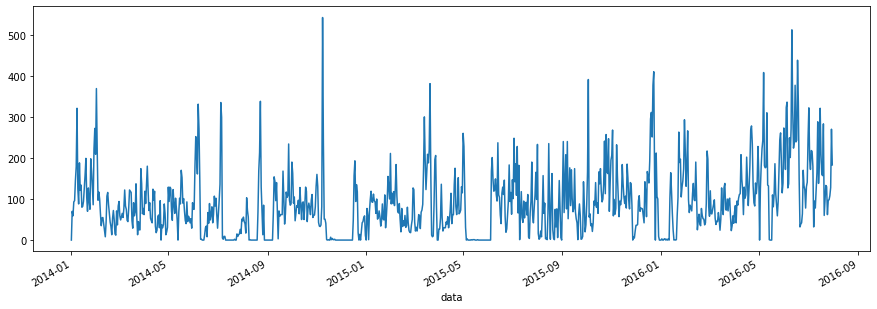

SARIMAX: Sales example
[2]:
import pandas as pd
import numpy as np
import matplotlib.pyplot as plt
[3]:
# df = pd.DataFrame(columns = ['demand'])
# l = []
# for i in range(0, 740):
# trend = 0.2*i
# seasonal = [10,12,15,18,20,17,6][i % 7]
# resid = np.random.normal(loc = 0, scale = 3, size = 1)[0]
# l.append(trend + seasonal + resid)
# df['value'] = l
# df['date'] = pd.date_range(start = '2019-01-01', periods=740)
# df.value.plot(figsize = (15,5))
[4]:
# sales = pd.read_csv('sales data-set.csv') #.query("Store == 1").query("Dept == 1").sort_values(by = 'Date')
# sales['Date'] = pd.to_datetime(sales.Date)
# sales.set_index('Date', inplace = True)
# sales.sort_index(inplace = True)
[6]:
#IMPORTING THE DATAFRAME ONLY FOR VISUALIZATION
sales = pd.read_csv('mock_kaggle.csv')
sales['data'] = pd.to_datetime(sales.data)
sales.set_index('data', inplace = True)
sales.sort_index(inplace = True)
sales.venda.plot(figsize = (15,5));
# print(sales)

[122]:
params = {
"interface_config":[
{
"step_name":"DataReader",
"id":"i01",
"enabled":True,
"params":{
"dataset_name":"target",
"file_name":"mock_kaggle.csv",
"has_header":True,
"as_type":"pandas",
"schema":[
{
"column_header":"data",
"type":"datetime",
"rename_to":"date"
},
{
"column_header":"venda",
"type":"float",
"rename_to":"demand"
}
]
}
},
{
"step_name":"OutputProcessor",
"id":"i03",
"enabled":True,
"params":{
"dataset_name":"prediction",
"file_name":"output.csv",
"schema":[
{
"column_header":"date",
"rename_to":"date",
"type":"datetime"
},
{
"column_header":"prediction",
"rename_to":"prediction",
"type":"float"
}
]
}
}
],
"dataprep_config":[
{
"id":"d03",
"enabled":True,
"step_name":"DatePrep",
"params":{
"dataset_size_or_start_date":"2014-01-01",
"data_frequencies":{
"target":"D",
"related":"D"
}
}
},
{
"id":"d04",
"enabled":True,
"step_name":"MissingValueFiller",
"params":{
"missing_values":[
{
"dataset_name":"target",
"column_header":"demand",
"forward_looking":False,
"forward_fill":"zero",
"middle_fill":"zero",
"backward_fill":"zero"
}
]
}
},
{
"id":"d05",
"enabled":True,
"step_name":"DateAggregator",
"params":{
"dataset_aggregations":[
{
"dataset_name":"target",
"frequency":"D",
"aggregations":{
"demand":"sum"
}
}
]
}
}
],
"hyperparams_config":[
{
"id":"h01",
"enabled":True,
"step_name":"Sarimax",
"params":{
"horizon":30,
"frequency":"D",
"m":1,
"trend":"t",
"seasonal":True,
"has_related_data":False
}
}
],
"execution_config":{
"dataset_import_type":"pandas",
"ref_date":"2016-07-01"
}
}